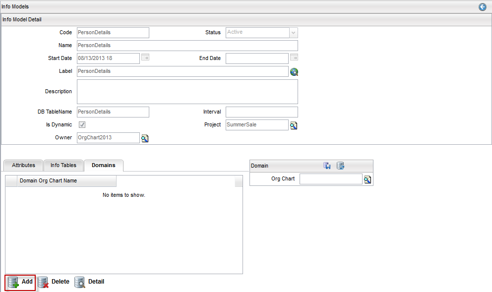

Domains for Info Model
To add domains for info model, complete these steps:
- From the menu bar, click Designer > Info Models.
- Search for the info model and select one.
- Click the Domains tab from Info Model detail page
- Click the Add button; the Domain dialog appears on the right side.

- Click the Search button next to the Org Chart field, and selcet one org chart to associate with the info model.
- Click the Save button.
Delete a Domain
To delete a domain related to info model, complete these steps:
- Click Domains tab from Info Model Detail page to display list of added domains.
- Select a domain from the list, and click the Delete button.
- A confirmation dialog appears; select Yes to delete the selected domain.
View details of a Domain
To view details of a domain related to info model, complete these steps:
- Click Domains tab from Info Model Detail page to display list of added domains.
- Select a domain from the list, and click the Detail button.
- The details of the selected domain appear.
|